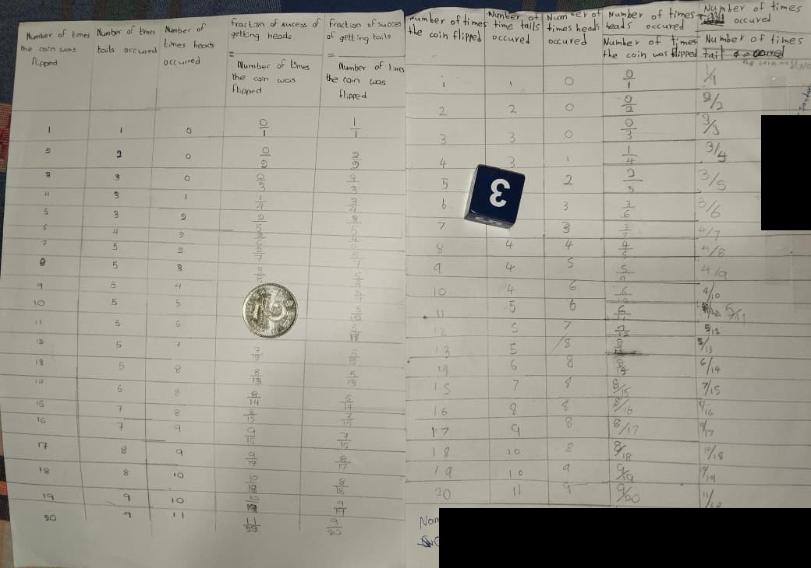

Twenty coin flips
Two recording sheets show how the fraction of heads can vary across 20 flips.
Learning goal
Use observed counts to calculate relative frequency and compare separate runs of the same experiment.
What we did
I used a coin and recording tables for the classroom experiment. Students recorded cumulative counts for heads and tails, then divided each count by the number of flips so far.
Why I chose this sample
I chose these two records because both reach 20 flips and end with different totals. The left sheet finishes with 11 heads and 9 tails. The right finishes with 9 heads and 11 tails. A die appears in the photograph. The columns shown record coin outcomes.
How I read the work
In the last row, heads plus tails must equal 20. The observed fractions of heads are 11/20 and 9/20. Both sit one twentieth away from one half. In each run the observed fractions of heads and tails add to one.
What I would change
A completed table shows that the group recorded the outcomes. To hear how learners interpret the variation, I would ask each group to predict a third run and explain whether exactly ten heads is guaranteed.
Classroom evidence
